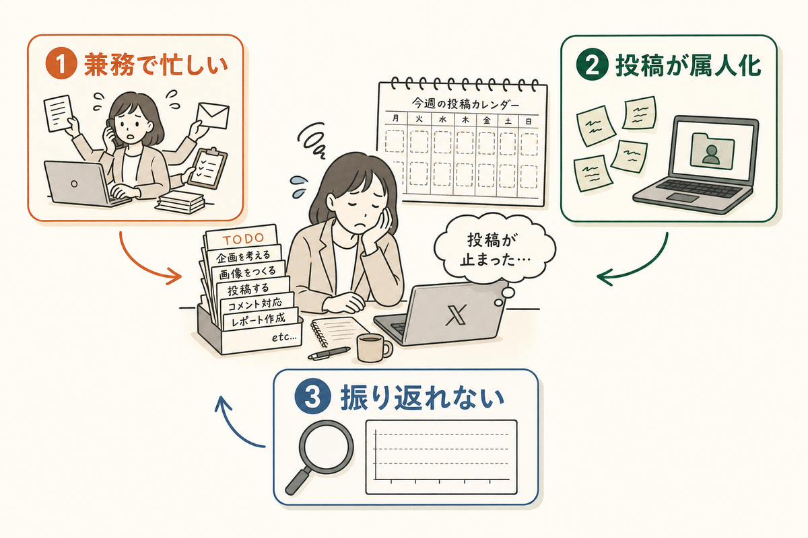
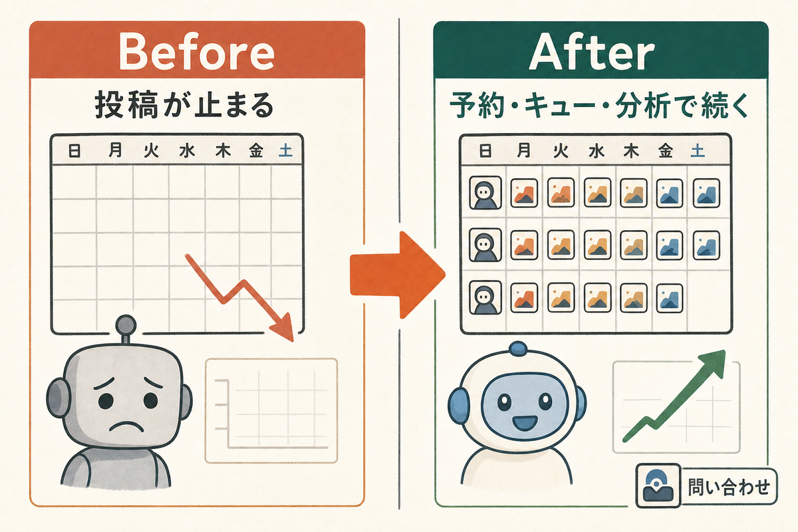
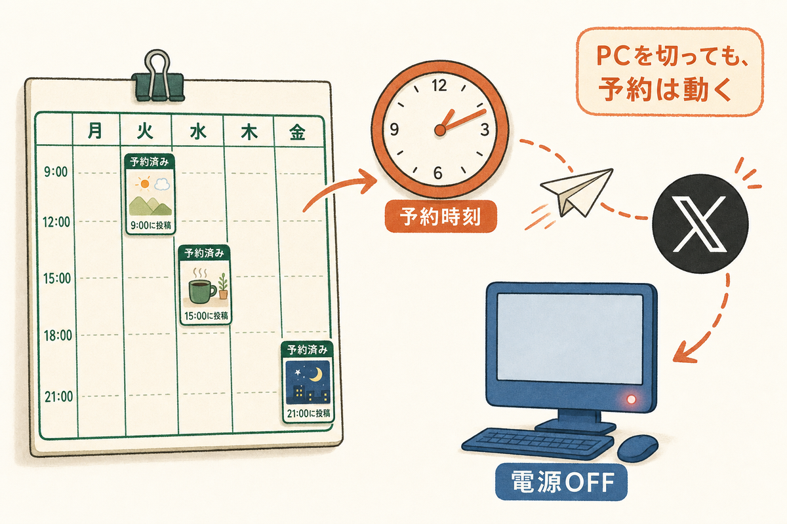
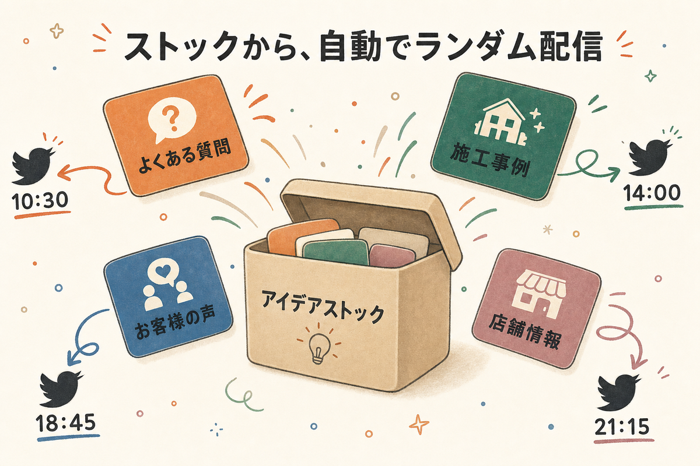
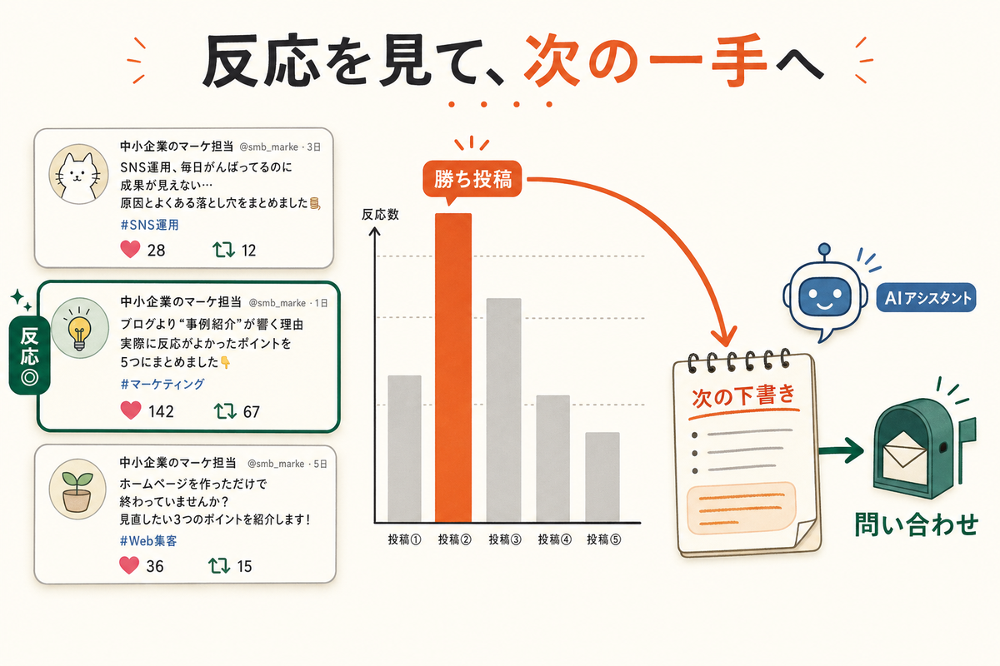
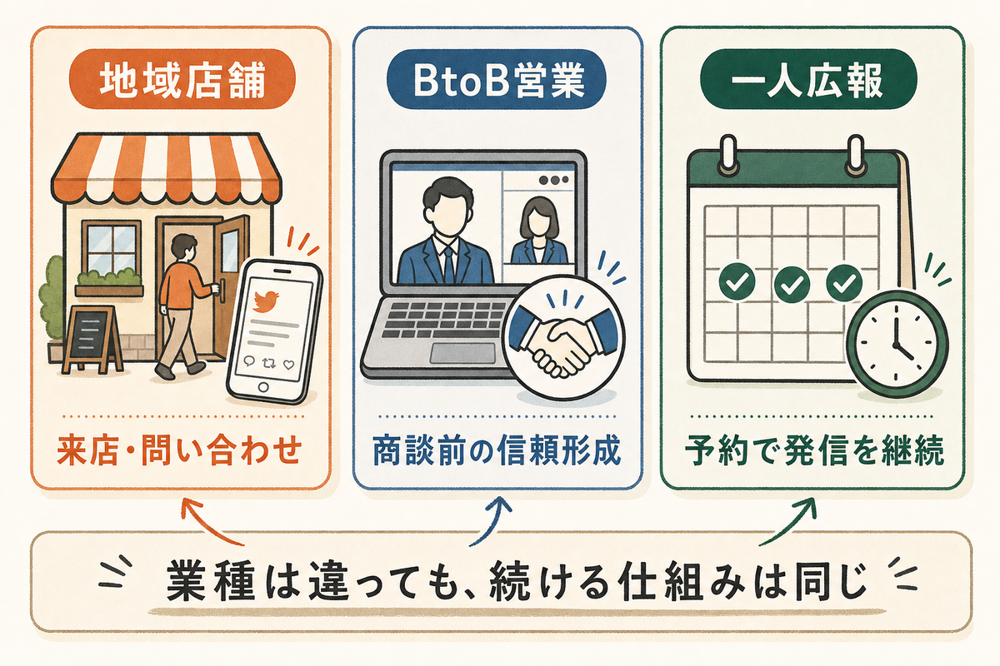

SNS担当が兼務で忙しい
営業、採用、現場対応の合間に投稿するため、思いついた日にだけ発信して、翌週には止まりがちです。
Problems
大きな広告予算や専任チームがなくても、見込み客に思い出してもらう発信は必要です。問題は、日々の業務に追われて投稿が止まることです。

営業、採用、現場対応の合間に投稿するため、思いついた日にだけ発信して、翌週には止まりがちです。
担当者のメモや個人PCに投稿案が散らばると、休みや退職のたびに発信ペースが落ちます。
反応が良かった投稿を残せないと、毎回ゼロから考えることになり、改善より作業に時間を取られます。
Why XToolsPro4
APIの話は裏側の仕組みです。LPで伝えたい価値は、SNS担当者が忙しくても投稿準備、配信、振り返りを止めないことです。

時間がある日に投稿案を作り、来週分まで予約。SNS担当が外出や商談で不在でも、発信の空白を作りにくくします。
定番ネタ、導入事例、採用情報をランダム投稿のストックにためておけば、毎回ゼロから考える時間を減らせます。
投稿分析で反応の良いテーマを見つけ、サービス紹介や資料請求、採用ページへつながる発信を増やせます。
Features
予約投稿
キャンペーン告知、導入事例、採用情報を先に登録。PCの電源を切っても予約投稿が動くため、担当者の予定に左右されにくくなります。

ランダム投稿
よくある質問、施工事例、店舗情報、お客様の声などを投稿候補としてストック。SNS担当が手を止めても、ストックから自動でランダムに配信できます。

投稿分析
反応が出た投稿テーマを確認し、次の下書きに反映。なんとなく投稿する状態から、勝ちパターンを増やす運用へ変えます。

Use Cases
業種が違っても、少人数で継続発信したい悩みは似ています。XToolsPro4は「投稿を考える時間」と「投稿を続ける仕組み」を分けて整えます。

キャンペーン、空き枠、よくある質問を定期発信。来店や問い合わせのきっかけを増やします。
導入事例、現場の知見、採用情報を継続投稿。商談前の信頼形成や応募前の理解促進に使えます。
投稿案をまとめて作り、翌週分まで予約。忙しい日でもSNSだけが止まる状態を避けられます。
お客様に伝えるべき主役は「少人数でも継続できること」。X APIは、その継続を支える裏側の安定した仕組みとして説明します。
Pricing
中小企業のX運用は、最初から大量投稿よりも「止めずに続ける」ことが重要です。料金は叩き台のため、実運用に合わせて調整できます。
Free
¥0/月
おすすめ
Growth
¥2,980/月
Volume
相談/月
What you get
接続済みアカウント、予約投稿、ランダム投稿のストック、クレジット残高、投稿分析を分散させずに管理します。社内で引き継ぎやすい状態を作れます。
今週・来週の投稿予定を見える化し、社内確認をしやすくします。
よくある質問や事例など、毎週の発信に使えるネタをためておけます。
従量課金の消費を確認し、使いすぎや残高不足に気づけます。
反応の良い型を見つけ、次の問い合わせにつながる投稿案へつなげます。
FAQ
XToolsPro4はX APIを使う構成です。従量課金は発生しますが、PCの電源状態に依存しにくく、予約投稿やランダム配信の安定性を重視しています。
使い方次第で費用は変わります。だからこそ、クレジット残高と消費履歴を見える化し、投稿数を調整しながら運用できる形にします。
少人数・兼務担当の運用を想定しています。毎日触るより、週1回まとめて投稿案を作り、予約とランダム配信で回す使い方から始めるのがおすすめです。
日常運用では、投稿登録、ストック確認、クレジット確認、投稿分析に集中できる画面構成を想定しています。APIの複雑さを毎回触らなくてよい設計です。
このLPは叩き台です。料金、無料クレジット数、対応アカウント数、サポート範囲は実運用の条件に合わせて調整してください。
CRO観点では、次に「中小企業の導入事例」「問い合わせ増加の実績」「週次運用テンプレート」を追加すると説得力が上がります。